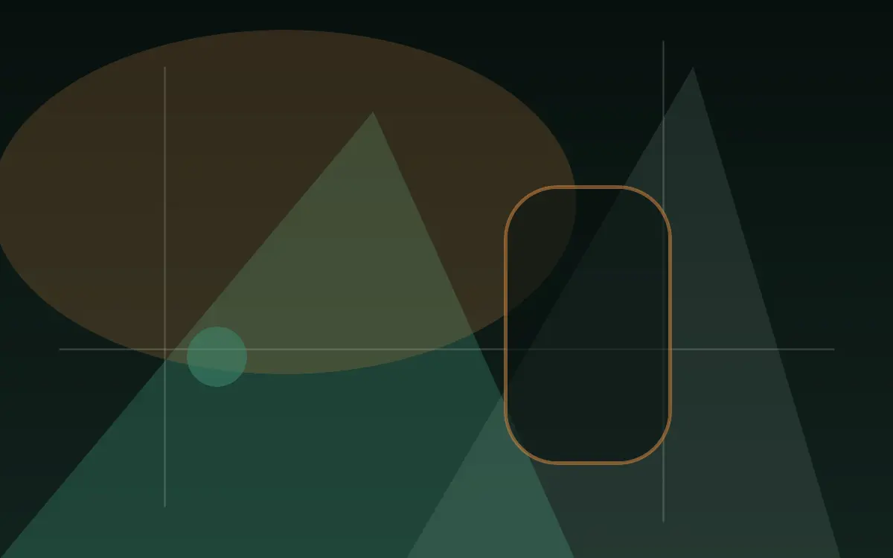
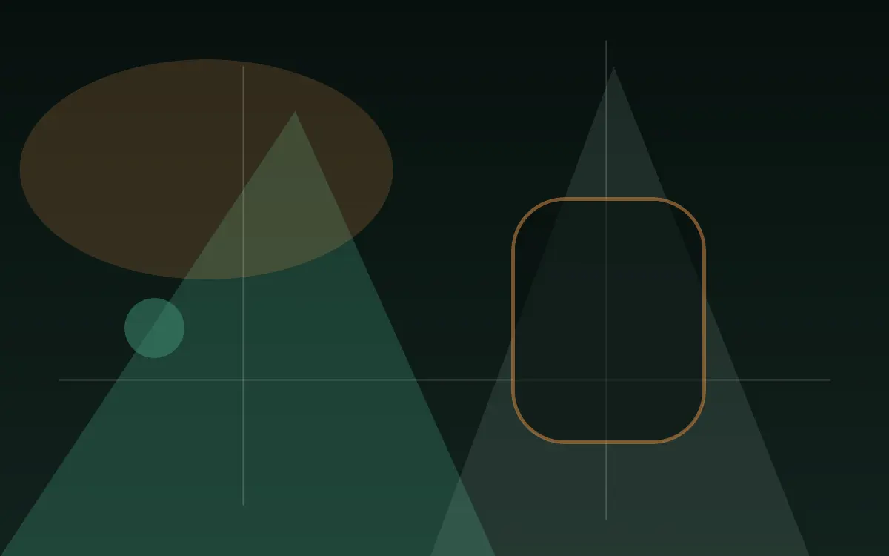

Classic-format cabinets
Familiar physical formats in a composed part of the floor.

Physical gaming venue · New Zealand
Physical gaming machines are grouped inside the venue with comfortable spacing, clear wayfinding and staff support close by.
Physical gaming machines are grouped inside the venue with comfortable spacing, clear wayfinding and staff support close by.
Cabinet types, availability and approved operation are managed at the venue. This page contains no playable games.
Quieter clusters support a slower visit; social zones create more energy; clear aisles keep movement comfortable.

Familiar physical formats in a composed part of the floor.
Modern on-site equipment arranged with sightlines and space.
Physical terminals used only after entering the venue.
Questions before the visit
Entry follows the legal gaming age in the venue’s jurisdiction. New Zealand casino gaming areas are restricted to guests aged 20 and over; Canadian requirements depend on the host province or territory.
Bring current government-issued photo identification accepted in the venue’s jurisdiction. Staff may request it at entry or inside age-restricted areas.
No. All gaming takes place inside the physical venue. This website does not provide online gambling.
Physical machine areas, hosted table zones and automated equipment may be available. The operator must confirm the exact daily mix.
Responsible gaming
Gaming is entertainment, not a way to earn money. Outcomes are uncertain and spending carries financial risk. Set a budget, take breaks and never chase losses.
Support is available if gambling stops feeling manageable.
Gambling Helpline Aotearoa — 0800 654 655Read our safer visit guide →Review entry, accessibility and responsible gaming information before travelling.
Cookie controls